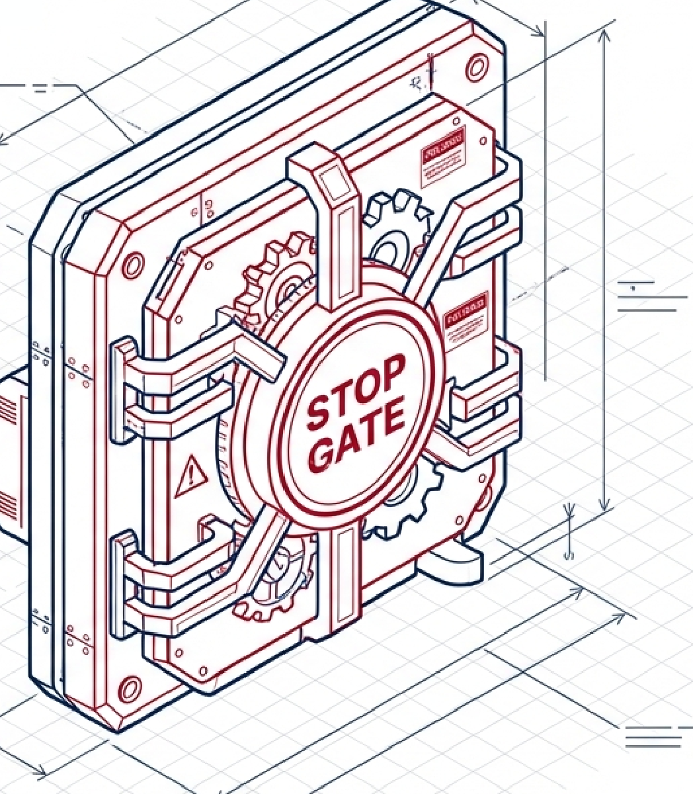

How SEVEN-G answers it
The answer, in three ideas
Each initiative goes through eight phases, from the idea to operation. Between phases there is a gate with five outcomes: continue, continue with conditions, iterate, pivot or stop.
The most important gate is the viability and risk gate. It comes before the heavy investment. No gate is passed on results alone: the objective must be met and the evidence must show it.
When an initiative is stopped, the register keeps the reason and the lesson. In this way the company learns and does not repeat the expense.

See it now
Where to see it and where it is explained
Each link opens the tool, the example or the document. The examples use a fictitious company.
Keep browsing